Пешие экскурсии по купеческим улицам, заводским кварталам и старым храмам. Рассказываем историю так, что хочется слушать, — и показываем город, который вы, кажется, знали.
Это не монолог гида, а настоящий разговор, где каждый может спросить, поделиться, удивиться»— из отчёта о прогулке по храмам Коврова
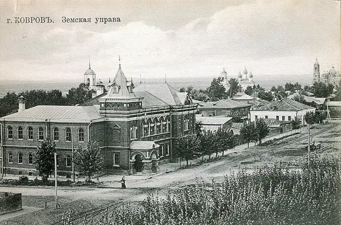
Земская управа
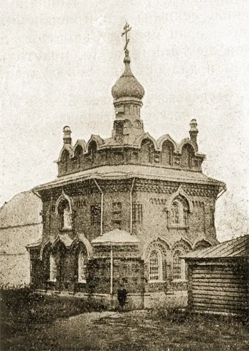
старый Ковров
Истории, которых нет в путеводителях
Купеческие династии, «важня», погребённый памятник, посёлок Заведение и первый экскаватор — о Коврове, каким его не рассказывают в школе.
Небольшие группы
Мест всегда ограничено: чтобы каждый услышал, задал вопрос и не стоял в хвосте толпы.
Маршрут выбираете вы
Перед каждой субботой в группе ВКонтакте голосуем, куда пойдём. Не были на каком-то маршруте — скажите, соберём группу.
Полтора часа пешком
Спокойный темп, по погоде. Подходит и взрослым, и детям — с нами ходили экскурсанты от пяти лет.
Маршруты7 способовузнать город
Шесть городских маршрутов и один особый — по храмам с настоятелем. Где стартуем, указано у каждого маршрута; точное место и время — в анонсе.
01
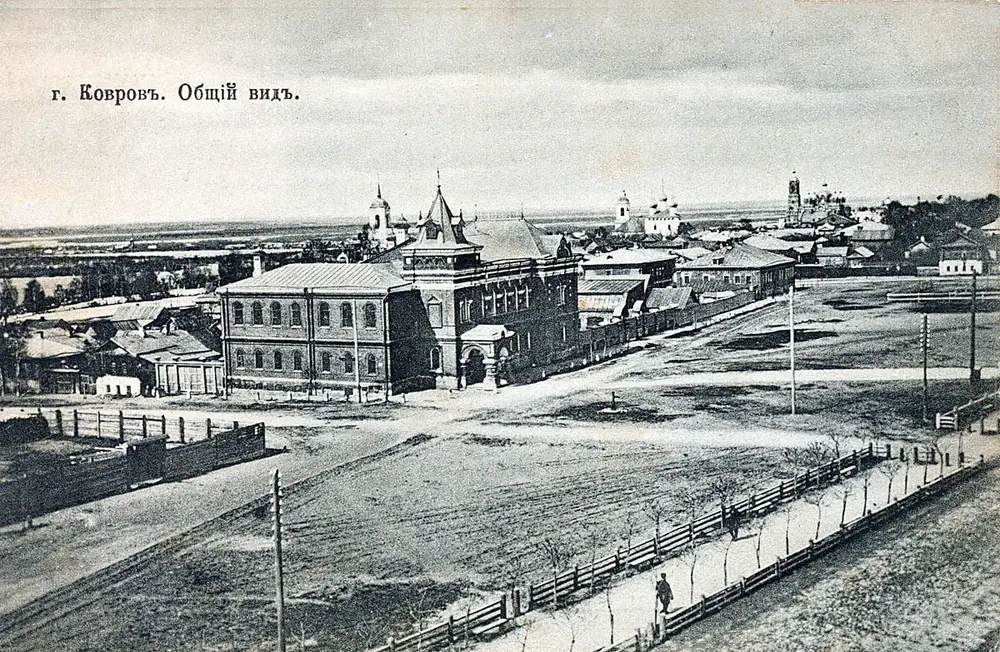
Сердце старого Коврова
Старые улочки, где каждый дом — свидетель взлётов и падений купеческих династий, революционных бурь и оружейной славы. Купеческий особняк Докукиных с лучшим рестораном дореволюционного города, планировка 1788 года — и почему на гербе Коврова зайцы.
старт — у вокзала
Исторический центр1,5 ч
02
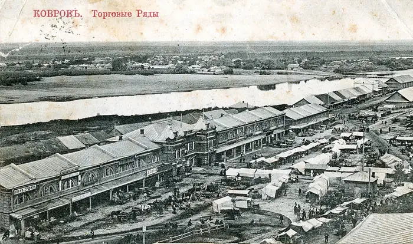
Ковров базарный
Как купцы сколачивали капитал и что такое «важня». Торговые ряды — «ковровский Хогвартс», редкое для всей области здание-конструктивизм с сохранившейся надписью и дом Дунаевых — одно из старейших деревянных зданий города.
старт — Музей природы и этнографии, Фёдорова, 6
Купцы и торговля1,5 ч
03
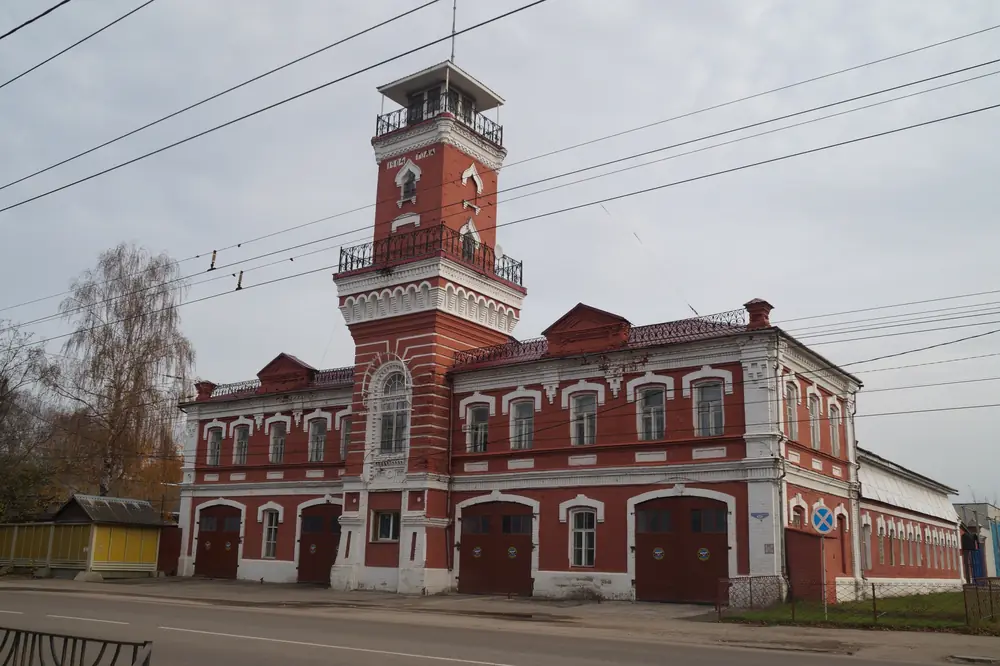
Тайны старого парка
От «Слова о полку Игореве» до советских легенд. Парк КЭЗ вырос на месте старинного Ильинского кладбища: сгоревшая часовня, исчезнувший памятник Сталину и история экскаватора «Ковровец».
старт — Дом-музей В. А. Дегтярёва
Парк КЭЗ1,5 ч
04
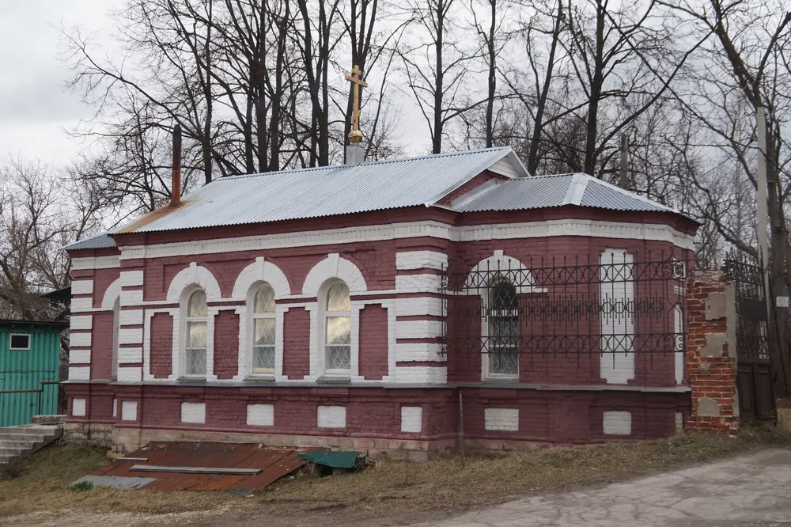
Треумовы: фабричная империя
Фабрика Треумовых — город в городе: дома для рабочих, баня, училище, часовня. Увидим, что осталось от империи, и услышим историю взлётов и драмы одной семьи.
старт — у кафе «Монарх»
Фабрика1,5 ч
05
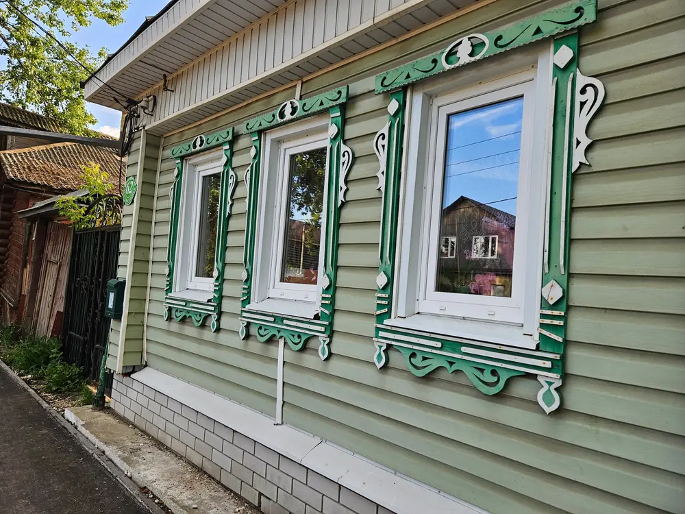
Былинный сказ о дубе том…
Под этим дубом, говорят, искал спасения от вьюги сам Андрей Боголюбский. Сенная площадь, самый красивый деревянный дом Треумовых, старейшее пожарное депо и памятник природы.
старт — Сенная площадь
Легенды1,5 ч
06
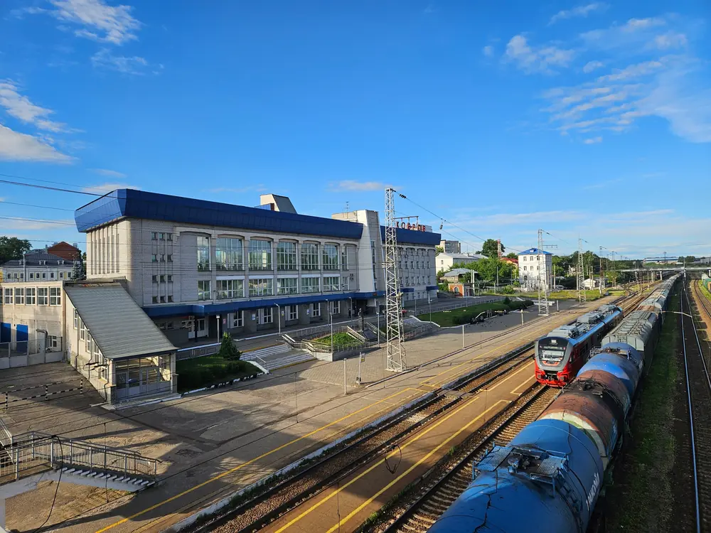
Рельсы времени
Мастерские, завод и революция — по ту сторону путей. Вокзал, которого больше нет, железнодорожные мастерские, где в XIX веке собирали первые вагоны, и посёлок, который в народе прозвали Заведением.
старт — вокзал Ковров-1
Индустрия1,5 ч
07
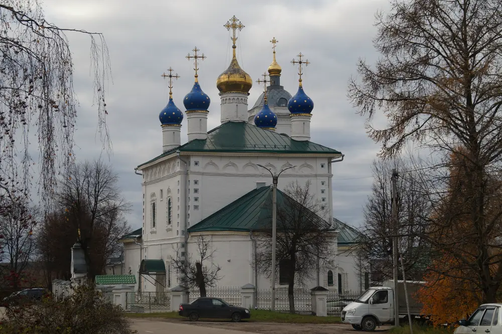
Белокаменные церкви Коврова
Особый маршрут. Христорождественский собор и церковь Иоанна Воина: росписи, иконы, приделы и открытый разговор с настоятелем.
старт — у ворот Христорождественской церкви
С настоятелем500 ₽ / 1 000 ₽ с обедом
…и дальше — куда проголосуете
Фактыо Коврове,которых нет в путеводителях
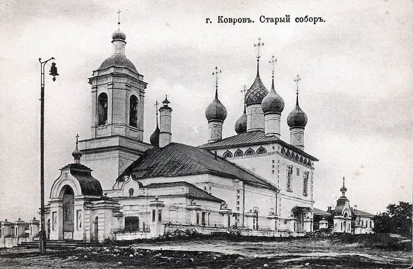
1157
Город мог называться Елифановкой
Предание гласит: зимой князь Андрей Боголюбский заблудился в лесах над Клязьмой и в канун Рождества вышел к избушке зверолова Елифана. В благодарность велел поставить церковь Рождества Христова — так деревня стала селом Рождественским, а позже Ковровом.
маршруты 05 и 07
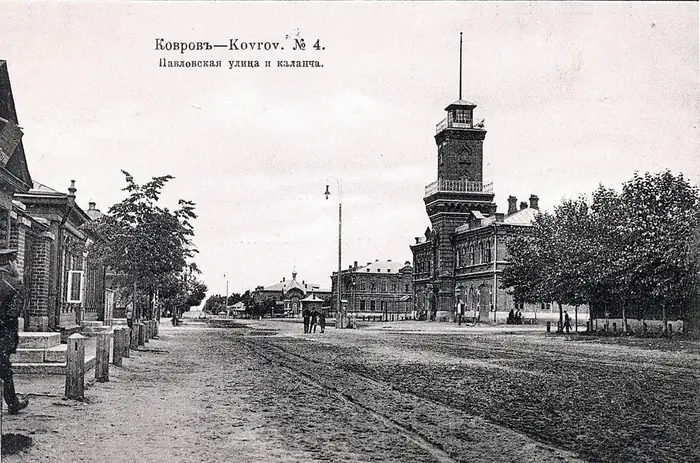
1788
Памятник градостроительства
Планировка северной части Коврова сохранилась с 1788 года. А зайцы на городском гербе, по легенде, появились благодаря… любви.
маршрут 011855
Дом изобретателя автомата
Музей природы и этнографии — один из старейших деревянных домов города. В 1918–1931 годах здесь жил В. Г. Фёдоров, вокруг которого выросла плеяда оружейников: Дегтярёв, Симонов, Шпагин.
маршрут 02
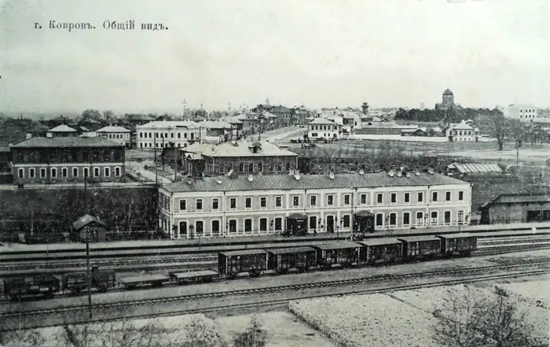
1866
Первые вагоны
Железнодорожные мастерские построили в 1862–1864 годах для ремонта Московско-Нижегородской дороги, а с 1866-го здесь уже выпускали вагоны собственной постройки. Посёлок вокруг «механического заведения» так и прозвали — Заведение.
маршрут 06139 лет
Вокзал, которого больше нет
Первый каменный вокзал открылся в 1864 году и считался самым большим зданием города. Его снесли в 2003-м — но рассказать о нём есть что.
маршрут 061924
Голубой дом Дегтярёва
В небольшом деревянном доме на улице Дегтярёва, 6-а, с 1924 по 1949 год жил конструктор-оружейник В. А. Дегтярёв. Ковров по праву называют одной из трёх оружейных столиц России.
маршрут 03
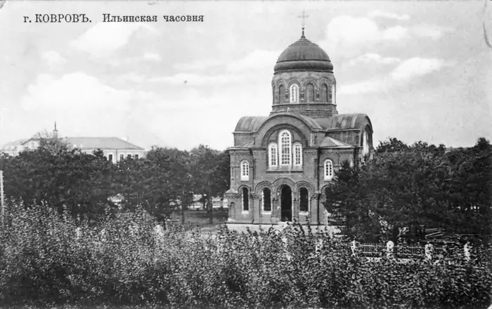
1928
Парк на старом погосте
Парк КЭЗ закладывали в 1928–1930 годах на месте Ильинского кладбища, где хоронили ещё в XVIII веке. До этого здесь были ярмарочная площадь и часовня.
маршрут 03«Ковровец»
Экскаватор из-за утонувшего американца
Прототипом был американский «Бьюсайрус» — но он утонул на одной из строек. Тогда в бывших железнодорожных мастерских сделали свою, надёжную и ремонтопригодную машину.
маршруты 03 и 06
Храмыисторияизнутри
Можно долго пересказывать документы, но есть вещи, которые понятны только из первых уст. По Христорождественскому собору и церкви Иоанна Воина ведёт иерей Павел Андреев — настоятель храма Иоанна Воина и благочинный Ковровского округа.
какие росписи украшают своды собора и почему они появились именно там;
какие иконы размещены в храмах и как они туда попали;
как устроены церкви и их приделы — с деталями, недоступными обычному туристу.
В прошлый раз вопросов было столько, что экскурсию пришлось продлить
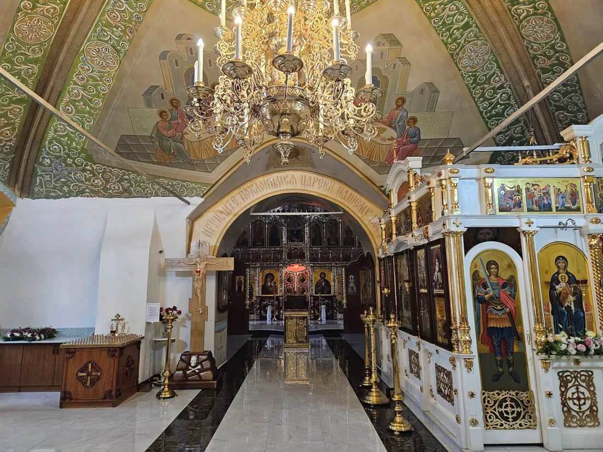
Приезжайтеиз соседнихгородов
Ковров стоит на главном ходу Москва — Нижний Новгород: «Ласточки» и электрички останавливаются на вокзале Ковров-1. Экскурсия в 11:00 — удобно приехать утром, а вечером вернуться домой.
Владимир≈ 30 минут на «Ласточке», от 45 минут на электричкеРасписание →
Москва≈ 2,5 часа на «Ласточке» с Курского вокзалаРасписание →
Нижний Новгородпрямые «Ласточки» по той же линииРасписание →